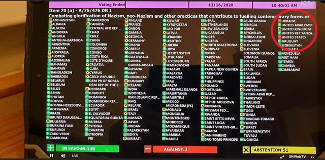

除了已经由科班出身名角大腕（李根大统领、泽连斯基大盖特曼）把持的美国、乌克兰之外，「楚门的世界」当中还有德国吗？
今年是德国「超级选举年」，六个联邦州和中央都要换届，默克尔肯定是要退休的，3月14号投票中已经有两州的基民盟大败以示庆祝了……「作者最大剧本钦定导演叫人三更死谁敢留人到五更」的文艺理论，让我们拭目以待。
……不过没发现各党派候选人当中有娱乐圈演艺界人士出身吖？不排除制片人安排马克龙那种「小鲜肉」横空出世搭配「古董花瓶」另组第三方势力一路青云直上主席台的神转折骚操作。
补充旧闻：
2020年12月16日俄罗斯此前递交决议草案，要求会员国通过立法消除一切形式的种族歧视，谴责“对纳粹运动、新纳粹主义以及前党卫军成员组织的任何形式的美化”。此外，决议还谴责针对第二次世界大战的修正主义。大会首先进行记录表决，最终成员国以130票赞成，2票反对（美国和乌克兰）以及51票弃权，通过了这项名为《“打击美化纳粹主义、新纳粹主义和助长当代形式种族主义、种族歧视、仇外心理及有关不容忍的其他做法》决议草案一。除美国和乌克兰反对外，包括德国、比利时、法国、日本、瑞典、英国以及澳大利亚等国家弃权。
